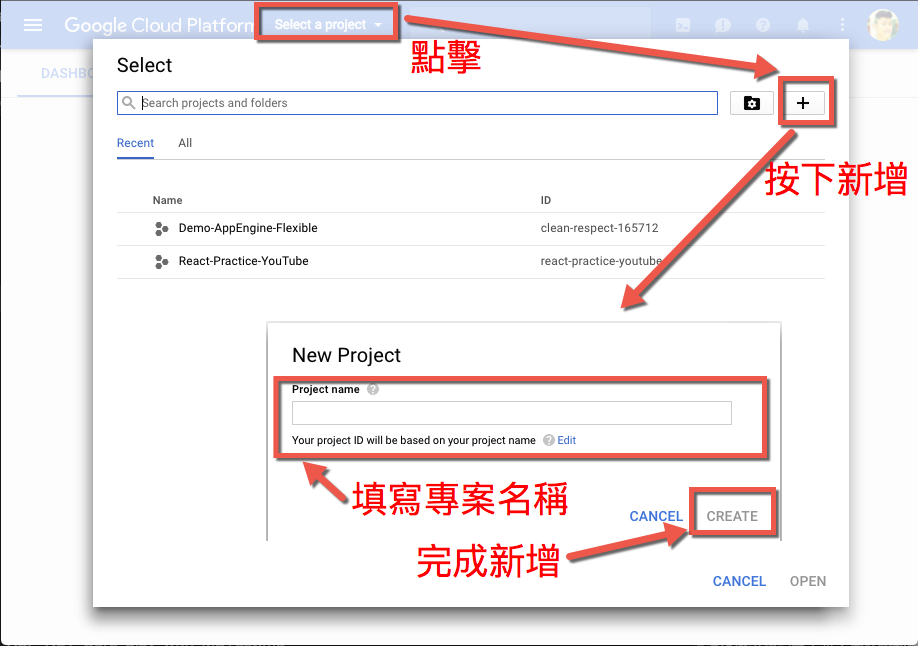
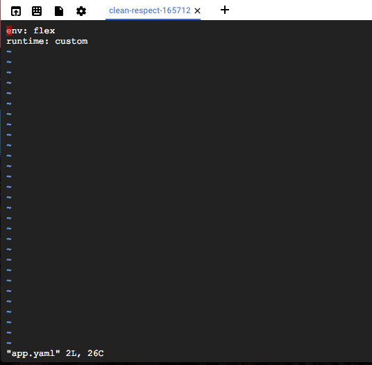
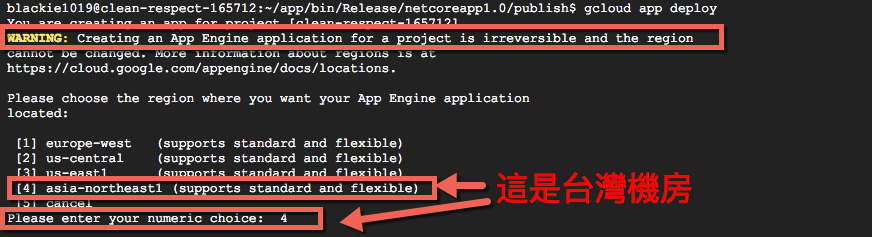
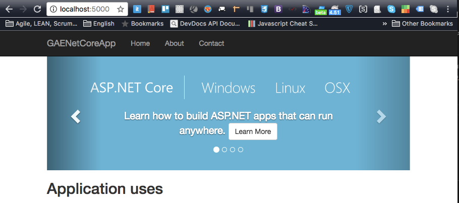
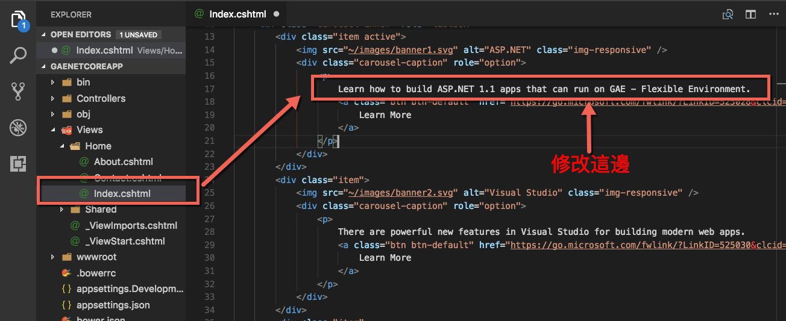
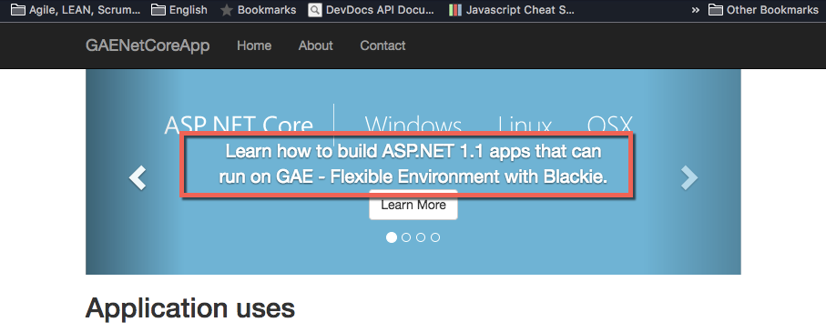
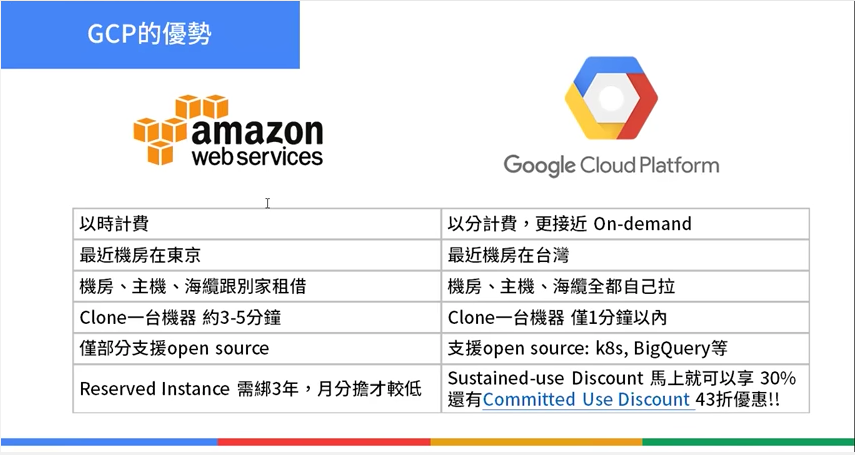

先前為大家介紹了GAE的 Standard Environment ，這次將介紹如何實際將ASP.NET Core MVC專案放置在GAE的 Flexible Environment 環境運行。
這邊因為還是在GAE的功能範圍，所以本篇只會針對 Flexible Environment 做細節的介紹，有關於GAE的全貌與不同Environment的請參考ASP.NET Core MVC play with Google App Engine - Standard Environment
Recap : The Difference Between Standard Environment and Flexible Environment
這邊我們分享一下 GCP 教材幫我們整理的差異:
簡單來講如果想獲得比較彈性的環境與願意付較多的錢，GAE 的 Standard Environment 給予我們一個最簡單上手的應用程式架設過程，但客製化的程度很低，如.NET Core的版本我們也不能指定．
而另外一個服務 GKE 則是讓你透過 Container ＋ K8S 的方式自己的喜好架設與設定強大的 Container Cluster ，將你的應用程式擺放上去．有興趣的人可以參考先前的ASP.NET Core MVC play with Google Container Engine
而相對於GKE自己設定K8S的難度比起來，GAE 的 Flexible Environment 能給予你更大的彈性但依舊免去維運上的負擔，持續專心在主要的應用開發上。架構上他透過下方的方式運作:
這邊可以看到有一份 app.yaml 檔案與 Dockerfilec 合作產生 Container 環境做運行，這份 app.yaml 就是 GAE - Flexible Environment 中最重要的設定檔，決定你的容器要在什麼條件下擴展．
接下來就直接來看看怎麼將.NET Core應用程式放置在GAE的 Flexible Environment 中運行．
Flexible Environment with ASP.NET Core 1.0.1
以下環境建置步驟會快速帶過，如果對各指令不懂可以參考先前的ASP.NET Core MVC play with Google App Engine - Standard Environment.NET Core 系列．
另外，再次提醒各位．由於 Google Cloud Shell 目前預載的 .NET CLI 是 .NET Core 1.0.0 - Preview 2，而微軟在2017/3發行了最新的.NET Core 1.1.1 ，並包含 .NET Core 1.1.1 與 .NET Core 1.0.1 SDK 版本的更新，所以這邊指令會有點不一樣，而很遺憾的目前沒有辦法幫 Google Cloud Shell 升級．在實作下面範例時請特別注意指令的差異．
Create New Project
這邊我們新增一個Google Cloud專案

Publish the ASP.NET Core 1.0 app
這邊我們快速的新增一個資料夾並透過 .NET CLI 幫我們建立 mvc 專案，並將其運行起來．
mkdir app;cd app
dotnet new -t web;dotnet restore;dotnet run
這邊我們一樣透過google cloud shell左上角的Web Preview可以看到下面的運行畫面:

Package the ASP.NET Core app as a Docker container
接著我們離開運行模式(ctrl+c)來將這個app容器化．
首先我們先將該應用程式發佈成正式環境的版本：
dotnet publish -c Release
這邊我們可以看到，除了會將我們的.NET Core正式用 Release 編譯，還會幫我們做front-end最佳化的處理並將檔案位置發佈到/home/blackie1019/app/bin/Release/netcoreapp1.0/publish 下面．
而我們前往該目錄並新增一份 Dockerfile 來定義容器內的設定．
cd /bin/Release/netcoreapp1.0/publish;touch Dockerfie;vi Dockerfile
接著我們將下面內容貼上
FROM microsoft/dotnet:1.0.1-runtime
COPY . /app
WORKDIR /app
EXPOSE 8080/tcp
ENV ASPNETCORE_URLS http://*:8080
ENTRYPOINT ["dotnet", "app.dll"]
這邊我們要注意 FROM 的部份我們要下載的root container image是微軟官方的1.0.1-runtime版本，而 ENTRYPOINT 這邊的dll要指定你的專案名稱的dll，如此處是 app.dll . 而這邊的port指定為 8080 則是 App Engine flexible 的指定要求，其他相關規定可以參考．
Create app.yaml for App Engine flexible and Deploy
而當我們將container設定準備好後，這邊可以透過 *Google Cloud SDK＊ 的 CLI 來幫我們建立 app.yaml檔案
gcloud beta app gen-config --custom
而當我們打開該檔案後可以發現其實裡面只有兩個設定如下：

到這邊你已經設定好 Release 版本的dll檔案, Dockerfile 與 app.yaml 後我們就可以將其發佈出去了
gcloud app deploy

這邊要再次確認後就會開始建置與部屬環境了
當完成後頁面會顯示你的應用程式部署的實際網址在哪邊(這邊用Web Preview的連結是不同的)，或是透過下面指令也可以查詢到：
gcloud app browse
An Overview of App Engine
如此一來我們就成功將我們的環境建置完成了．在看web操作介面前先帶大家瀏覽一下整個 App Engine 的架構
這邊我們可以看到我們的應用程式會被當成服務的方式被部署出去，就像是 微服務(microservice) 的架構被建立起來獨立運行，而App Engine也可以包括多個Service來讓不同功能的服務彼此互相溝通．
而每個 service 都包含原始碼(source code)與一份設定檔(configuration file)，當我們每次部署一個service出去時都會帶有一個特定的 version ，而實際運行的 instance 則要指定使用哪一版本的 version ．如此一來我們可以在當前版本有意外時進行退版(roll back)．
接著，我們來看一下Google Cloud Platform的 UI 介面在剛剛的部屬後有什麼變化．
Services
首先我們先看 App Eninge 下的 Services:
這邊跟我們剛剛用的 gcloud app browse 指令相同，但我們可以直接點選連結到我們運行的網站
Versions
這邊可以看到我們當前給他的版本：
Instances
這邊我們可以看到下方有一個 Instances (autoscaled)
主要設定解釋：
Manual Scaling
手動調整擴展的Instance
Basic Scaling
單純根據接收的 request 的量來調整Instance的數量，並會在app 閒置時(idle)關閉Instance．
Automatic Scaling
根據 request rate, response latencies 與其他應用程式相關的矩陣(metrics)算出是否需要調整Instance，而這也是預設的設定．
詳細的差異與內容請參考官方的Scaling types and instance classes說明
Flexible Environment with ASP.NET Core 1.1.1
在上面我們示範了如何使用 Google Cloud Shell 的方式幫我們建立一個ASP.NET Core 1.0.1的專案並透過容器化的過程打包整個應用程式成為一個Docker images，再將此發佈至GAE上作Flexible的擴展．但由於專案是我們透過 Google Cloud Shell 建立的，由於內建的SDK僅支援 ASP.NET Core 1.0.1 與 .NET CLI 1.0.0 的版本這讓我們無法透過內建的 .NET CLI 建立最新版的ASP.NET Core專案架構與CLI所提供的功能．
這邊我們可改用本機下載的 ASP.NET Core 1.1.1 SDK 建立一個新版的開發環境．而我們一樣會將起封裝成 Docker Images 後再透過 Google Cloud SDK 將此環境發佈至 App Engine ，接下來就讓我們來實作這樣的過程吧：
Prepare Your Environments
接著，不同於 App Engine 我們可以運用Google Cloud Shell直接來開發我們的程式，官方這邊也建議我們在Flexible Environment的開發採用本地端的容器化開發方式(Containerized)，主要就是我們可能想要建立一個不同於 GAE - Standard Environment 版本的環境，而在本機開發方便我們驗證是否成功建立我們想要的容器(Container)。
這邊我們就需要在本機安裝 Google Cloud SDK, .NET Core 1.1 SDK 與選擇性安裝 Docker (如果你不要驗證可以不用安裝)．
這邊接下來的步驟與先前的ASP.NET Core MVC play with Google Container Engine 的部分雷同，如果想看詳細描述可以參考此篇．
Publish the ASP.NET Core 1.1 app
這邊我們快速成立一個mvc的應用程式, 接著將網站運行起來:
dotnet new mvc;dotnet restore; dotnet run
前往http://localhost:5000可以看到下面結果：

由於 ASP.NET Core 的 Razer頁面變更不用重新建置，所以我們可以直接前往Views>Home>Index.cshtml 做些修改：

在回到頁面可看到下方結果：

Package the ASP.NET Core 1.1 app as a Docker container
接著一樣發佈該應用程式：
dotnet publish -c Release;
到該發行的目錄下建立Dockerfile:
cd bin/Release/netcoreapp1.1/publish;touch Docker;vi Dockerfile
這邊要注意我們的FROM要改為 microsoft/dotnet:1.1.1-runtime 並修改 ENTRYPOINT 內運行的dll名稱：
FROM microsoft/dotnet:1.1.1-runtime
COPY . /app
WORKDIR /app
EXPOSE 8080/tcp
ENV ASPNETCORE_URLS http://*:8080
ENTRYPOINT ["dotnet", "GAENetCoreApp.dll"]
如果本機有 Docker 則可以建立image：
docker build -t blackie1019/aspnetcoredemo:gae .
運行起來後到http://localhost:8080/看看
docker run -d -p 8080:8080 -t blackie1019/aspnetcoredemo:gae
Create app.yaml for App Engine flexible and Custom Runtime
接著我們新增 app.yaml 並添加下面設定：
service: netcore-latest-version
runtime: custom
env: flex
automatic_scaling:
min_num_instances: 1
max_num_instances: 3
cool_down_period_sec: 60 # default value
cpu_utilization:
target_utilization: 0.5
這邊我們設定它的擴展從1個instance開始並且依據CPU的使用率(如果達到50%就開一個新的instance,最多到3個instance)．
Using Google Cloud SDK to Deploy
當我們設定好了app.yaml後我們透過gcloud info指令確定一下當前登入的專案是否正確：
這邊我們可以透過下方指令查詢目前的設定：
gcloud config configurations list
切換至不同設定：
gcloud config configurations activate <YOUR_CONFIG>
接著我們可以幫我們的設定檔案加入不同的屬性，這邊加入 account 與 project :
gcloud config set account blackie1019@gmail.com
gcloud config set project clean-respect-165712
其他請參考gcloud config set
當設定完成，我們就可以部署上去：
gcloud app deploy
這邊會用 gcloud 的設定檔與 app.yaml 指定的 service 作部署，所以我們可以回到ＵＩ界面看到我們的 Services 多了一個版本紀錄：
這邊也可以看到 Versions 舊的設定已經stopped，啟用的是新的設定．
而當我們在回到原本部署出去的頁面https://clean-respect-165712.appspot.com/，可以看到中間的Banner顯示目前的運行版本是ASP.NET Core 1.1 版本．
[補充] Why Google Cloud Platform
身為一個.NET的愛好者來說，Azure應該是首選，但為什麼我會積極的介紹GCP呢？理由很簡單：錢與擴充性！
而各個主流 Cloud 的選擇可以參考下面的文章：
- 該選哪朵雲？比較兩大雲端供應商 GCP 與 AWS
- An AWS user’s take on AWS vs. Microsoft Azure and Google Cloud Platform
- A Side-by-Side Comparison of AWS, Google Cloud and Azure
一個雲端服務除了一開始的技術與架構門檻跨過後，剩下的大概就是三個問題：錢、錢、錢
雲端的服務使用時間、空間、與用了多少方便的服務都是要錢的，既然如此一開始的考量應該是我們都能達到需求的情況下誰真的能給予最划算的價錢

而這邊不拿Azure出來比較是因為Azure有的服務AWS都有，考量到ASP.NET Core本身就是一個跨平台的技術，如果不能跨雲端平台被綁死在微軟自己體系下豈不是有點可惜？
ASP.NET Core天生就與Azure的整合應該是最好的，而使用AWS的人又佔了雲端50%以上的用戶，不缺與AWS整合的文章或學習資源．
所以為了多元的推廣 ASP.NET Core 這樣一個好技術與雲端平台的其他選擇，我開始了這一系列Google Cloud Platform的文章．之後我分享更多ASP.NET Core能與GCP服務整合的實務案例，提供整體架構選擇上的一另一種組合！
而擴充性，這邊強調Google的Firebase實在是直得大家研究的工具，他大大減少整個應用程式開發的底層架構，大家都知道要研發汽車，我們不用重複製作輪子，一樣的道理，要製作網站我們也不用所有功能都自己套用套件開發，有些服務或功能在大部分網站或是手機應用程式的服務上都是必備的功能，這邊Firebase就是一個很好的解決方案．
對於Firebase有興趣的朋友可以參考另外一篇的ASP.NET Core play with Firebase介紹．